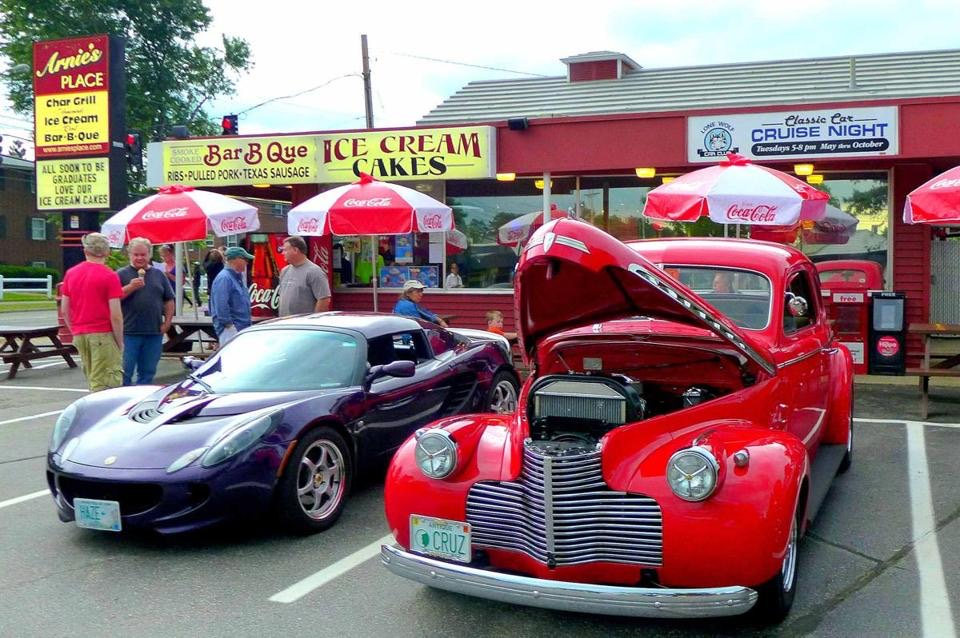
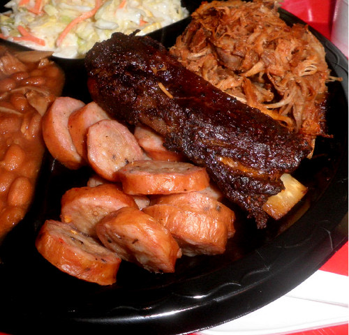
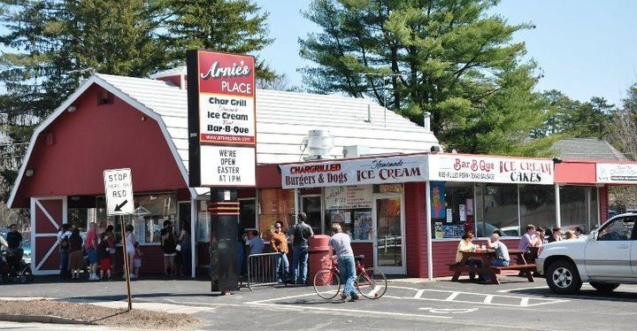
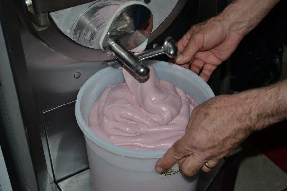
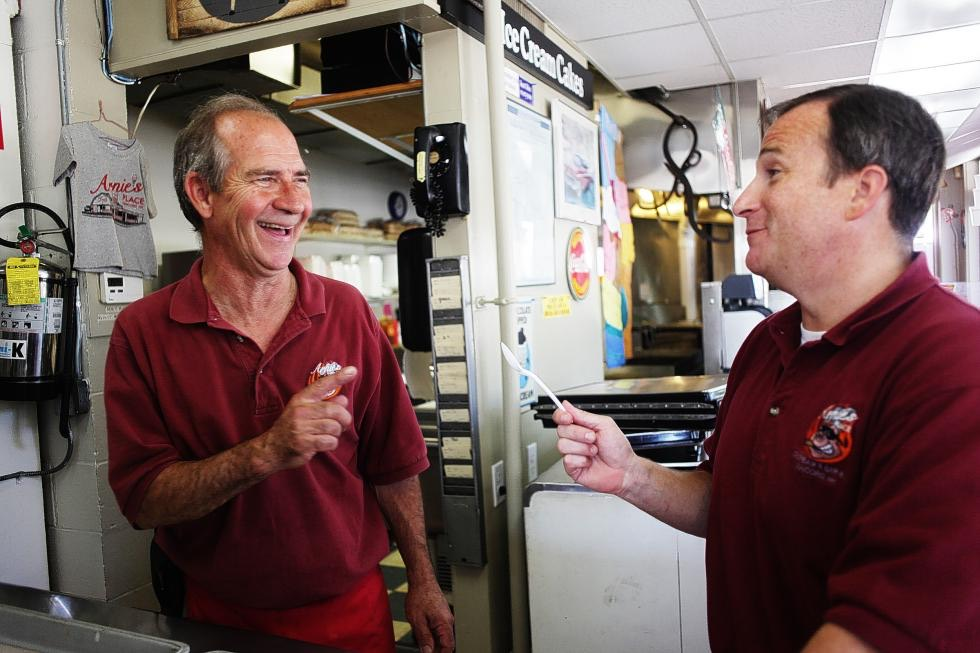
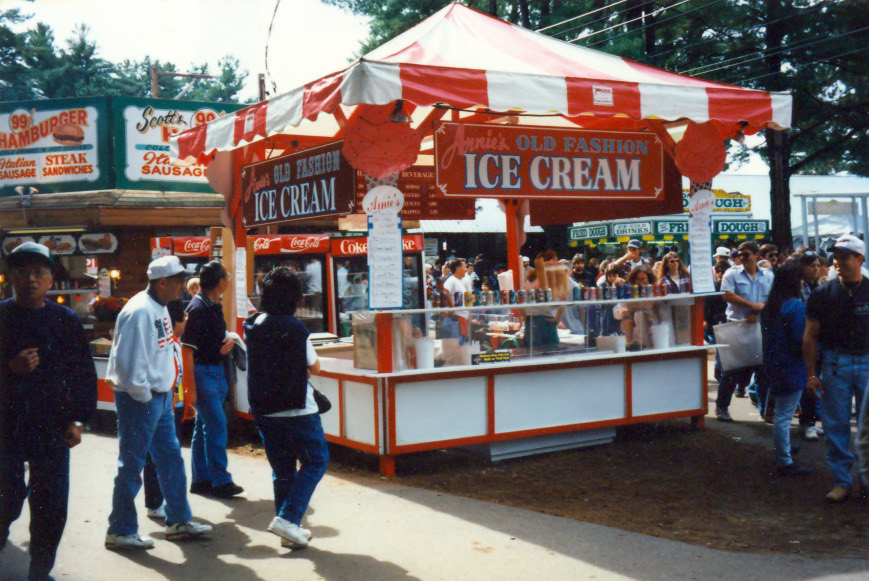
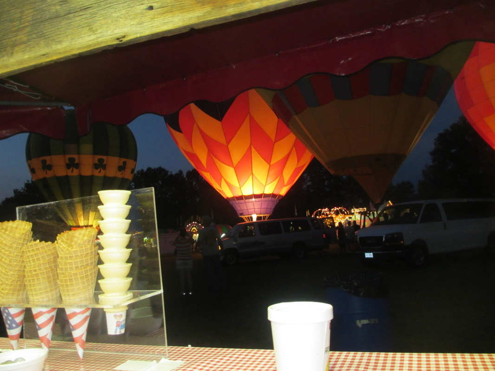
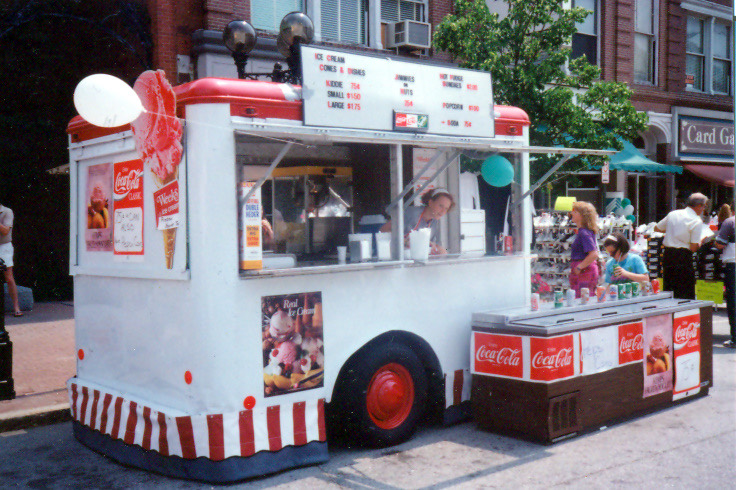
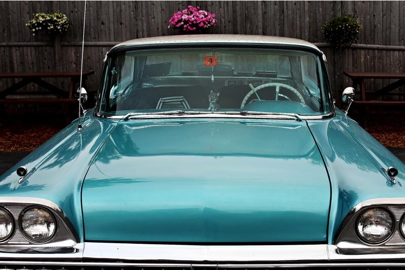
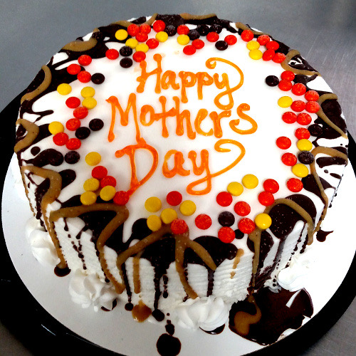

Homemade, 15% butterfat
Hard ice cream made on site, plus soft serve, frozen yogurt, sherbet and sorbet. Cones, sundaes, flurries, frappes and floats. Every hard flavor goes home in pints, quarts and half gallons.
Flavor listMade in the back room of our shop on the Heights, one 2½-gallon batch at a time. Plus hickory-smoked Bar-B-Que and char-grilled burgers.
Open early April through mid October

01 / Three specialties
Juicy burgers, tangy barbecue and creamy homemade ice cream, all from one counter. Order your meal, then come back for a cone.
Hard ice cream made on site, plus soft serve, frozen yogurt, sherbet and sorbet. Cones, sundaes, flurries, frappes and floats. Every hard flavor goes home in pints, quarts and half gallons.
Flavor list
Spareribs, pulled pork, spicy sausage and smoked pulled chicken, slow cooked over hickory wood in our in-house smoker.
Food menu
Smoky char-grilled burgers, hot dogs, char-grilled chicken sandwiches and a full kids menu. Gluten-free buns available.
What's on the grill02 / How it's made
The other guys make lots of ice cream in a factory somewhere. Ours is made right here, which keeps it fresh and creamy.
03 / Our story
Arnie's was first built in 1960 as a Dairy Queen. In the summer of 1992 Tom Arnold took the reins and opened Arnie's Place with his homemade ice cream recipes, some of them over 70 years old.
Tom grew up in the business. His father worked at the original Friendly's in Pine Point, Massachusetts, managed a Friendly's in Worcester and bought the Weeks ice cream shop in Concord in 1964, where Tom worked for him.
In May 2019 Kaitlyn Witts bought Arnie's from Tom, her long-time mentor. Tom hired her at 16, and she worked at Arnie's on and off for almost 24 years before taking over. Her family has grown up at Arnie's, which truly makes this a family business. If you're lucky, you might still see Tom popping by to help.
Today Kaitlyn puts in many hours a week making the ice cream herself, and she is very protective of who gets to touch her really old ice cream machine.


04 / Recognition
Readers' Poll winner, Favorite Ice Cream (Greater Concord)
Best Concord Area Ice Cream
Capital Area People's Preference
2017
05 / From the freezer
We rotate flavors through the season. Want something we don't have? Mention it and maybe we'll make a batch.

Gluten-free cones, some dairy-free flavors and no-sugar-added options too. Just ask at the window.
All flavors06 / Around Arnie's
Arnie's ice cream goes on the road in summer: celebrations, fairs, festivals, car shows and balloon rallies.





07 / Community
Teams, schools and local groups use our parking lot for car washes on Saturday and Sunday mornings. Spots fill up fast, so call well in advance.
Need a gift certificate for a fundraiser? Call, text or email us with your request. Last year Arnie's donated hundreds of gift certificates.
Cruise nights will be back in the spring. We're looking for an organization to help run the events for the 2027 season.
08 / Ask Arnie
Straight from our Ask Arnie page.
We don't actually make it at home, but we do make it right in the back room of our shop. We use a batch freezer that produces 2½-gallon tubs at a time, which gives us a great deal of control over quality. No preservatives to make it "hold", no whey powder to stretch it.
Once the mix is in the batch freezer it takes 9 to 15 minutes. The tubs then harden at −25° for at least 12 hours and temper in a storage freezer for another 3 to 6 hours before serving.
At Arnie's, a frappe is hard ice cream, milk and syrup. A milkshake is soft serve, milk and syrup.
Yes. We have gluten-free sandwich buns and ice cream cones, and over 25 of our hard ice cream flavors are gluten-free. Just let us know when you order.
Our freezer space is limited, and new ice cream needs at least 12 hours to harden. We restock as quickly as we can. The upside: our ice cream is always fresh.
There's no formal tour program, but we've done tours with small school groups. Contact us by email or at the store and we'll set it up. If you see us making ice cream and it isn't busy, just ask.
09 / Visit
Arnie's Place is a seasonal business, open early April through mid October. Christmas trees and wreaths start on Thanksgiving Day.